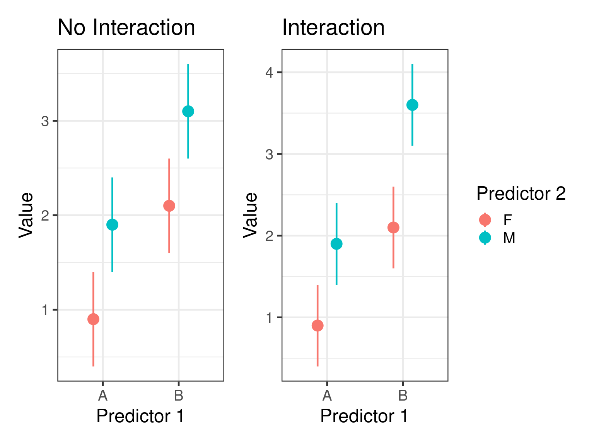

# Two way anova - two categorical predictors
mod_anova2 <- lm(bill_length_mm ~ sex + species, data = penguins)
# ancova - one categorical one continuous predictor
mod_ancova <- lm(bill_length_mm ~ sex + flipper_length_mm, data = penguins)
# Multiple regression - two continuous
mod_mult <- lm(bill_length_mm ~ body_mass_g + flipper_length_mm, data = penguins)Multiple Regression
Bio300B Lecture 8
Richard J. Telford (Richard.Telford@uib.no)
Institutt for biovitenskap, UiB
6 October 2025
Outline
- Types of models
- Interactions
- Model selection
- Exploratory data analysis
- Anova for hypothesis testing
- Multi-collinearity
- Autocorrelation
- Reporting statistics
Adding more variables
Call:
lm(formula = bill_length_mm ~ sex + species, data = penguins)
Residuals:
Min 1Q Median 3Q Max
-6.087 -1.377 -0.071 1.225 11.013
Coefficients:
Estimate Std. Error t value Pr(>|t|)
(Intercept) 36.977 0.231 160.2 <2e-16 ***
sexmale 3.694 0.255 14.5 <2e-16 ***
speciesChinstrap 10.010 0.341 29.3 <2e-16 ***
speciesGentoo 8.698 0.287 30.3 <2e-16 ***
---
Signif. codes: 0 '***' 0.001 '**' 0.01 '*' 0.05 '.' 0.1 ' ' 1
Residual standard error: 2.32 on 329 degrees of freedom
(11 observations deleted due to missingness)
Multiple R-squared: 0.821, Adjusted R-squared: 0.819
F-statistic: 503 on 3 and 329 DF, p-value: <2e-16
Call:
lm(formula = bill_length_mm ~ sex + flipper_length_mm, data = penguins)
Residuals:
Min 1Q Median 3Q Max
-9.720 -2.812 -0.812 2.021 19.764
Coefficients:
Estimate Std. Error t value Pr(>|t|)
(Intercept) -4.4669 3.2364 -1.38 0.17
sexmale 2.0727 0.4568 4.54 8e-06 ***
flipper_length_mm 0.2359 0.0163 14.46 <2e-16 ***
---
Signif. codes: 0 '***' 0.001 '**' 0.01 '*' 0.05 '.' 0.1 ' ' 1
Residual standard error: 4.03 on 330 degrees of freedom
(11 observations deleted due to missingness)
Multiple R-squared: 0.46, Adjusted R-squared: 0.457
F-statistic: 141 on 2 and 330 DF, p-value: <2e-16
Call:
lm(formula = bill_length_mm ~ body_mass_g + flipper_length_mm,
data = penguins)
Residuals:
Min 1Q Median 3Q Max
-8.806 -2.590 -0.705 1.991 18.829
Coefficients:
Estimate Std. Error t value Pr(>|t|)
(Intercept) -3.436694 4.580553 -0.75 0.45
body_mass_g 0.000662 0.000567 1.17 0.24
flipper_length_mm 0.221865 0.032348 6.86 3.3e-11 ***
---
Signif. codes: 0 '***' 0.001 '**' 0.01 '*' 0.05 '.' 0.1 ' ' 1
Residual standard error: 4.12 on 339 degrees of freedom
(2 observations deleted due to missingness)
Multiple R-squared: 0.433, Adjusted R-squared: 0.43
F-statistic: 129 on 2 and 339 DF, p-value: <2e-16Different formula


What is an interaction
Effect of one predictor depends on value of another
Interaction between categorical predictors
Call:
lm(formula = flipper_length_mm ~ species * sex, data = penguins)
Residuals:
Min 1Q Median 3Q Max
-15.795 -3.411 0.088 3.459 17.589
Coefficients:
Estimate Std. Error t value Pr(>|t|)
(Intercept) 187.795 0.662 283.72 < 2e-16 ***
speciesChinstrap 3.941 1.174 3.36 0.00088 ***
speciesGentoo 24.912 0.995 25.04 < 2e-16 ***
sexmale 4.616 0.936 4.93 1.3e-06 ***
speciesChinstrap:sexmale 3.560 1.661 2.14 0.03278 *
speciesGentoo:sexmale 4.218 1.397 3.02 0.00274 **
---
Signif. codes: 0 '***' 0.001 '**' 0.01 '*' 0.05 '.' 0.1 ' ' 1
Residual standard error: 5.66 on 327 degrees of freedom
(11 observations deleted due to missingness)
Multiple R-squared: 0.84, Adjusted R-squared: 0.837
F-statistic: 342 on 5 and 327 DF, p-value: <2e-16
Understanding coefficients
#| '!! shinylive warning !!': |
#| shinylive does not work in self-contained HTML documents.
#| Please set `embed-resources: false` in your metadata.
#| label: coef-explain-app
#| standalone: true
#| viewerHeight: 650
library(shiny)
library(bslib)
penguins <- structure(list(species = structure(c(1L, 1L, 1L, 1L, 1L, 1L,
1L, 1L, 1L, 1L, 1L, 1L, 1L, 1L, 1L, 1L, 1L, 1L, 1L, 1L, 1L, 1L,
1L, 1L, 1L, 1L, 1L, 1L, 1L, 1L, 1L, 1L, 1L, 1L, 1L, 1L, 1L, 1L,
1L, 1L, 1L, 1L, 1L, 1L, 1L, 1L, 1L, 1L, 1L, 1L, 1L, 1L, 1L, 1L,
1L, 1L, 1L, 1L, 1L, 1L, 1L, 1L, 1L, 1L, 1L, 1L, 1L, 1L, 1L, 1L,
1L, 1L, 1L, 1L, 1L, 1L, 1L, 1L, 1L, 1L, 1L, 1L, 1L, 1L, 1L, 1L,
1L, 1L, 1L, 1L, 1L, 1L, 1L, 1L, 1L, 1L, 1L, 1L, 1L, 1L, 1L, 1L,
1L, 1L, 1L, 1L, 1L, 1L, 1L, 1L, 1L, 1L, 1L, 1L, 1L, 1L, 1L, 1L,
1L, 1L, 1L, 1L, 1L, 1L, 1L, 1L, 1L, 1L, 1L, 1L, 1L, 1L, 1L, 1L,
1L, 1L, 1L, 1L, 1L, 1L, 1L, 1L, 1L, 1L, 1L, 1L, 1L, 1L, 1L, 1L,
1L, 1L, 3L, 3L, 3L, 3L, 3L, 3L, 3L, 3L, 3L, 3L, 3L, 3L, 3L, 3L,
3L, 3L, 3L, 3L, 3L, 3L, 3L, 3L, 3L, 3L, 3L, 3L, 3L, 3L, 3L, 3L,
3L, 3L, 3L, 3L, 3L, 3L, 3L, 3L, 3L, 3L, 3L, 3L, 3L, 3L, 3L, 3L,
3L, 3L, 3L, 3L, 3L, 3L, 3L, 3L, 3L, 3L, 3L, 3L, 3L, 3L, 3L, 3L,
3L, 3L, 3L, 3L, 3L, 3L, 3L, 3L, 3L, 3L, 3L, 3L, 3L, 3L, 3L, 3L,
3L, 3L, 3L, 3L, 3L, 3L, 3L, 3L, 3L, 3L, 3L, 3L, 3L, 3L, 3L, 3L,
3L, 3L, 3L, 3L, 3L, 3L, 3L, 3L, 3L, 3L, 3L, 3L, 3L, 3L, 3L, 3L,
3L, 3L, 3L, 3L, 3L, 3L, 3L, 3L, 3L, 3L, 3L, 3L, 3L, 3L, 2L, 2L,
2L, 2L, 2L, 2L, 2L, 2L, 2L, 2L, 2L, 2L, 2L, 2L, 2L, 2L, 2L, 2L,
2L, 2L, 2L, 2L, 2L, 2L, 2L, 2L, 2L, 2L, 2L, 2L, 2L, 2L, 2L, 2L,
2L, 2L, 2L, 2L, 2L, 2L, 2L, 2L, 2L, 2L, 2L, 2L, 2L, 2L, 2L, 2L,
2L, 2L, 2L, 2L, 2L, 2L, 2L, 2L, 2L, 2L, 2L, 2L, 2L, 2L, 2L, 2L,
2L, 2L), levels = c("Adelie", "Chinstrap", "Gentoo"), class = "factor"),
island = structure(c(3L, 3L, 3L, 3L, 3L, 3L, 3L, 3L, 3L,
3L, 3L, 3L, 3L, 3L, 3L, 3L, 3L, 3L, 3L, 3L, 1L, 1L, 1L, 1L,
1L, 1L, 1L, 1L, 1L, 1L, 2L, 2L, 2L, 2L, 2L, 2L, 2L, 2L, 2L,
2L, 2L, 2L, 2L, 2L, 2L, 2L, 2L, 2L, 2L, 2L, 1L, 1L, 1L, 1L,
1L, 1L, 1L, 1L, 1L, 1L, 1L, 1L, 1L, 1L, 1L, 1L, 1L, 1L, 3L,
3L, 3L, 3L, 3L, 3L, 3L, 3L, 3L, 3L, 3L, 3L, 3L, 3L, 3L, 3L,
2L, 2L, 2L, 2L, 2L, 2L, 2L, 2L, 2L, 2L, 2L, 2L, 2L, 2L, 2L,
2L, 1L, 1L, 1L, 1L, 1L, 1L, 1L, 1L, 1L, 1L, 1L, 1L, 1L, 1L,
1L, 1L, 3L, 3L, 3L, 3L, 3L, 3L, 3L, 3L, 3L, 3L, 3L, 3L, 3L,
3L, 3L, 3L, 2L, 2L, 2L, 2L, 2L, 2L, 2L, 2L, 2L, 2L, 2L, 2L,
2L, 2L, 2L, 2L, 2L, 2L, 2L, 2L, 1L, 1L, 1L, 1L, 1L, 1L, 1L,
1L, 1L, 1L, 1L, 1L, 1L, 1L, 1L, 1L, 1L, 1L, 1L, 1L, 1L, 1L,
1L, 1L, 1L, 1L, 1L, 1L, 1L, 1L, 1L, 1L, 1L, 1L, 1L, 1L, 1L,
1L, 1L, 1L, 1L, 1L, 1L, 1L, 1L, 1L, 1L, 1L, 1L, 1L, 1L, 1L,
1L, 1L, 1L, 1L, 1L, 1L, 1L, 1L, 1L, 1L, 1L, 1L, 1L, 1L, 1L,
1L, 1L, 1L, 1L, 1L, 1L, 1L, 1L, 1L, 1L, 1L, 1L, 1L, 1L, 1L,
1L, 1L, 1L, 1L, 1L, 1L, 1L, 1L, 1L, 1L, 1L, 1L, 1L, 1L, 1L,
1L, 1L, 1L, 1L, 1L, 1L, 1L, 1L, 1L, 1L, 1L, 1L, 1L, 1L, 1L,
1L, 1L, 1L, 1L, 1L, 1L, 1L, 1L, 1L, 1L, 1L, 1L, 2L, 2L, 2L,
2L, 2L, 2L, 2L, 2L, 2L, 2L, 2L, 2L, 2L, 2L, 2L, 2L, 2L, 2L,
2L, 2L, 2L, 2L, 2L, 2L, 2L, 2L, 2L, 2L, 2L, 2L, 2L, 2L, 2L,
2L, 2L, 2L, 2L, 2L, 2L, 2L, 2L, 2L, 2L, 2L, 2L, 2L, 2L, 2L,
2L, 2L, 2L, 2L, 2L, 2L, 2L, 2L, 2L, 2L, 2L, 2L, 2L, 2L, 2L,
2L, 2L, 2L, 2L, 2L), levels = c("Biscoe", "Dream", "Torgersen"
), class = "factor"), bill_len = c(39.1, 39.5, 40.3, NA,
36.7, 39.3, 38.9, 39.2, 34.1, 42, 37.8, 37.8, 41.1, 38.6,
34.6, 36.6, 38.7, 42.5, 34.4, 46, 37.8, 37.7, 35.9, 38.2,
38.8, 35.3, 40.6, 40.5, 37.9, 40.5, 39.5, 37.2, 39.5, 40.9,
36.4, 39.2, 38.8, 42.2, 37.6, 39.8, 36.5, 40.8, 36, 44.1,
37, 39.6, 41.1, 37.5, 36, 42.3, 39.6, 40.1, 35, 42, 34.5,
41.4, 39, 40.6, 36.5, 37.6, 35.7, 41.3, 37.6, 41.1, 36.4,
41.6, 35.5, 41.1, 35.9, 41.8, 33.5, 39.7, 39.6, 45.8, 35.5,
42.8, 40.9, 37.2, 36.2, 42.1, 34.6, 42.9, 36.7, 35.1, 37.3,
41.3, 36.3, 36.9, 38.3, 38.9, 35.7, 41.1, 34, 39.6, 36.2,
40.8, 38.1, 40.3, 33.1, 43.2, 35, 41, 37.7, 37.8, 37.9, 39.7,
38.6, 38.2, 38.1, 43.2, 38.1, 45.6, 39.7, 42.2, 39.6, 42.7,
38.6, 37.3, 35.7, 41.1, 36.2, 37.7, 40.2, 41.4, 35.2, 40.6,
38.8, 41.5, 39, 44.1, 38.5, 43.1, 36.8, 37.5, 38.1, 41.1,
35.6, 40.2, 37, 39.7, 40.2, 40.6, 32.1, 40.7, 37.3, 39, 39.2,
36.6, 36, 37.8, 36, 41.5, 46.1, 50, 48.7, 50, 47.6, 46.5,
45.4, 46.7, 43.3, 46.8, 40.9, 49, 45.5, 48.4, 45.8, 49.3,
42, 49.2, 46.2, 48.7, 50.2, 45.1, 46.5, 46.3, 42.9, 46.1,
44.5, 47.8, 48.2, 50, 47.3, 42.8, 45.1, 59.6, 49.1, 48.4,
42.6, 44.4, 44, 48.7, 42.7, 49.6, 45.3, 49.6, 50.5, 43.6,
45.5, 50.5, 44.9, 45.2, 46.6, 48.5, 45.1, 50.1, 46.5, 45,
43.8, 45.5, 43.2, 50.4, 45.3, 46.2, 45.7, 54.3, 45.8, 49.8,
46.2, 49.5, 43.5, 50.7, 47.7, 46.4, 48.2, 46.5, 46.4, 48.6,
47.5, 51.1, 45.2, 45.2, 49.1, 52.5, 47.4, 50, 44.9, 50.8,
43.4, 51.3, 47.5, 52.1, 47.5, 52.2, 45.5, 49.5, 44.5, 50.8,
49.4, 46.9, 48.4, 51.1, 48.5, 55.9, 47.2, 49.1, 47.3, 46.8,
41.7, 53.4, 43.3, 48.1, 50.5, 49.8, 43.5, 51.5, 46.2, 55.1,
44.5, 48.8, 47.2, NA, 46.8, 50.4, 45.2, 49.9, 46.5, 50, 51.3,
45.4, 52.7, 45.2, 46.1, 51.3, 46, 51.3, 46.6, 51.7, 47, 52,
45.9, 50.5, 50.3, 58, 46.4, 49.2, 42.4, 48.5, 43.2, 50.6,
46.7, 52, 50.5, 49.5, 46.4, 52.8, 40.9, 54.2, 42.5, 51, 49.7,
47.5, 47.6, 52, 46.9, 53.5, 49, 46.2, 50.9, 45.5, 50.9, 50.8,
50.1, 49, 51.5, 49.8, 48.1, 51.4, 45.7, 50.7, 42.5, 52.2,
45.2, 49.3, 50.2, 45.6, 51.9, 46.8, 45.7, 55.8, 43.5, 49.6,
50.8, 50.2), bill_dep = c(18.7, 17.4, 18, NA, 19.3, 20.6,
17.8, 19.6, 18.1, 20.2, 17.1, 17.3, 17.6, 21.2, 21.1, 17.8,
19, 20.7, 18.4, 21.5, 18.3, 18.7, 19.2, 18.1, 17.2, 18.9,
18.6, 17.9, 18.6, 18.9, 16.7, 18.1, 17.8, 18.9, 17, 21.1,
20, 18.5, 19.3, 19.1, 18, 18.4, 18.5, 19.7, 16.9, 18.8, 19,
18.9, 17.9, 21.2, 17.7, 18.9, 17.9, 19.5, 18.1, 18.6, 17.5,
18.8, 16.6, 19.1, 16.9, 21.1, 17, 18.2, 17.1, 18, 16.2, 19.1,
16.6, 19.4, 19, 18.4, 17.2, 18.9, 17.5, 18.5, 16.8, 19.4,
16.1, 19.1, 17.2, 17.6, 18.8, 19.4, 17.8, 20.3, 19.5, 18.6,
19.2, 18.8, 18, 18.1, 17.1, 18.1, 17.3, 18.9, 18.6, 18.5,
16.1, 18.5, 17.9, 20, 16, 20, 18.6, 18.9, 17.2, 20, 17, 19,
16.5, 20.3, 17.7, 19.5, 20.7, 18.3, 17, 20.5, 17, 18.6, 17.2,
19.8, 17, 18.5, 15.9, 19, 17.6, 18.3, 17.1, 18, 17.9, 19.2,
18.5, 18.5, 17.6, 17.5, 17.5, 20.1, 16.5, 17.9, 17.1, 17.2,
15.5, 17, 16.8, 18.7, 18.6, 18.4, 17.8, 18.1, 17.1, 18.5,
13.2, 16.3, 14.1, 15.2, 14.5, 13.5, 14.6, 15.3, 13.4, 15.4,
13.7, 16.1, 13.7, 14.6, 14.6, 15.7, 13.5, 15.2, 14.5, 15.1,
14.3, 14.5, 14.5, 15.8, 13.1, 15.1, 14.3, 15, 14.3, 15.3,
15.3, 14.2, 14.5, 17, 14.8, 16.3, 13.7, 17.3, 13.6, 15.7,
13.7, 16, 13.7, 15, 15.9, 13.9, 13.9, 15.9, 13.3, 15.8, 14.2,
14.1, 14.4, 15, 14.4, 15.4, 13.9, 15, 14.5, 15.3, 13.8, 14.9,
13.9, 15.7, 14.2, 16.8, 14.4, 16.2, 14.2, 15, 15, 15.6, 15.6,
14.8, 15, 16, 14.2, 16.3, 13.8, 16.4, 14.5, 15.6, 14.6, 15.9,
13.8, 17.3, 14.4, 14.2, 14, 17, 15, 17.1, 14.5, 16.1, 14.7,
15.7, 15.8, 14.6, 14.4, 16.5, 15, 17, 15.5, 15, 13.8, 16.1,
14.7, 15.8, 14, 15.1, 15.2, 15.9, 15.2, 16.3, 14.1, 16, 15.7,
16.2, 13.7, NA, 14.3, 15.7, 14.8, 16.1, 17.9, 19.5, 19.2,
18.7, 19.8, 17.8, 18.2, 18.2, 18.9, 19.9, 17.8, 20.3, 17.3,
18.1, 17.1, 19.6, 20, 17.8, 18.6, 18.2, 17.3, 17.5, 16.6,
19.4, 17.9, 19, 18.4, 19, 17.8, 20, 16.6, 20.8, 16.7, 18.8,
18.6, 16.8, 18.3, 20.7, 16.6, 19.9, 19.5, 17.5, 19.1, 17,
17.9, 18.5, 17.9, 19.6, 18.7, 17.3, 16.4, 19, 17.3, 19.7,
17.3, 18.8, 16.6, 19.9, 18.8, 19.4, 19.5, 16.5, 17, 19.8,
18.1, 18.2, 19, 18.7), flipper_len = c(181L, 186L, 195L,
NA, 193L, 190L, 181L, 195L, 193L, 190L, 186L, 180L, 182L,
191L, 198L, 185L, 195L, 197L, 184L, 194L, 174L, 180L, 189L,
185L, 180L, 187L, 183L, 187L, 172L, 180L, 178L, 178L, 188L,
184L, 195L, 196L, 190L, 180L, 181L, 184L, 182L, 195L, 186L,
196L, 185L, 190L, 182L, 179L, 190L, 191L, 186L, 188L, 190L,
200L, 187L, 191L, 186L, 193L, 181L, 194L, 185L, 195L, 185L,
192L, 184L, 192L, 195L, 188L, 190L, 198L, 190L, 190L, 196L,
197L, 190L, 195L, 191L, 184L, 187L, 195L, 189L, 196L, 187L,
193L, 191L, 194L, 190L, 189L, 189L, 190L, 202L, 205L, 185L,
186L, 187L, 208L, 190L, 196L, 178L, 192L, 192L, 203L, 183L,
190L, 193L, 184L, 199L, 190L, 181L, 197L, 198L, 191L, 193L,
197L, 191L, 196L, 188L, 199L, 189L, 189L, 187L, 198L, 176L,
202L, 186L, 199L, 191L, 195L, 191L, 210L, 190L, 197L, 193L,
199L, 187L, 190L, 191L, 200L, 185L, 193L, 193L, 187L, 188L,
190L, 192L, 185L, 190L, 184L, 195L, 193L, 187L, 201L, 211L,
230L, 210L, 218L, 215L, 210L, 211L, 219L, 209L, 215L, 214L,
216L, 214L, 213L, 210L, 217L, 210L, 221L, 209L, 222L, 218L,
215L, 213L, 215L, 215L, 215L, 216L, 215L, 210L, 220L, 222L,
209L, 207L, 230L, 220L, 220L, 213L, 219L, 208L, 208L, 208L,
225L, 210L, 216L, 222L, 217L, 210L, 225L, 213L, 215L, 210L,
220L, 210L, 225L, 217L, 220L, 208L, 220L, 208L, 224L, 208L,
221L, 214L, 231L, 219L, 230L, 214L, 229L, 220L, 223L, 216L,
221L, 221L, 217L, 216L, 230L, 209L, 220L, 215L, 223L, 212L,
221L, 212L, 224L, 212L, 228L, 218L, 218L, 212L, 230L, 218L,
228L, 212L, 224L, 214L, 226L, 216L, 222L, 203L, 225L, 219L,
228L, 215L, 228L, 216L, 215L, 210L, 219L, 208L, 209L, 216L,
229L, 213L, 230L, 217L, 230L, 217L, 222L, 214L, NA, 215L,
222L, 212L, 213L, 192L, 196L, 193L, 188L, 197L, 198L, 178L,
197L, 195L, 198L, 193L, 194L, 185L, 201L, 190L, 201L, 197L,
181L, 190L, 195L, 181L, 191L, 187L, 193L, 195L, 197L, 200L,
200L, 191L, 205L, 187L, 201L, 187L, 203L, 195L, 199L, 195L,
210L, 192L, 205L, 210L, 187L, 196L, 196L, 196L, 201L, 190L,
212L, 187L, 198L, 199L, 201L, 193L, 203L, 187L, 197L, 191L,
203L, 202L, 194L, 206L, 189L, 195L, 207L, 202L, 193L, 210L,
198L), body_mass = c(3750L, 3800L, 3250L, NA, 3450L, 3650L,
3625L, 4675L, 3475L, 4250L, 3300L, 3700L, 3200L, 3800L, 4400L,
3700L, 3450L, 4500L, 3325L, 4200L, 3400L, 3600L, 3800L, 3950L,
3800L, 3800L, 3550L, 3200L, 3150L, 3950L, 3250L, 3900L, 3300L,
3900L, 3325L, 4150L, 3950L, 3550L, 3300L, 4650L, 3150L, 3900L,
3100L, 4400L, 3000L, 4600L, 3425L, 2975L, 3450L, 4150L, 3500L,
4300L, 3450L, 4050L, 2900L, 3700L, 3550L, 3800L, 2850L, 3750L,
3150L, 4400L, 3600L, 4050L, 2850L, 3950L, 3350L, 4100L, 3050L,
4450L, 3600L, 3900L, 3550L, 4150L, 3700L, 4250L, 3700L, 3900L,
3550L, 4000L, 3200L, 4700L, 3800L, 4200L, 3350L, 3550L, 3800L,
3500L, 3950L, 3600L, 3550L, 4300L, 3400L, 4450L, 3300L, 4300L,
3700L, 4350L, 2900L, 4100L, 3725L, 4725L, 3075L, 4250L, 2925L,
3550L, 3750L, 3900L, 3175L, 4775L, 3825L, 4600L, 3200L, 4275L,
3900L, 4075L, 2900L, 3775L, 3350L, 3325L, 3150L, 3500L, 3450L,
3875L, 3050L, 4000L, 3275L, 4300L, 3050L, 4000L, 3325L, 3500L,
3500L, 4475L, 3425L, 3900L, 3175L, 3975L, 3400L, 4250L, 3400L,
3475L, 3050L, 3725L, 3000L, 3650L, 4250L, 3475L, 3450L, 3750L,
3700L, 4000L, 4500L, 5700L, 4450L, 5700L, 5400L, 4550L, 4800L,
5200L, 4400L, 5150L, 4650L, 5550L, 4650L, 5850L, 4200L, 5850L,
4150L, 6300L, 4800L, 5350L, 5700L, 5000L, 4400L, 5050L, 5000L,
5100L, 4100L, 5650L, 4600L, 5550L, 5250L, 4700L, 5050L, 6050L,
5150L, 5400L, 4950L, 5250L, 4350L, 5350L, 3950L, 5700L, 4300L,
4750L, 5550L, 4900L, 4200L, 5400L, 5100L, 5300L, 4850L, 5300L,
4400L, 5000L, 4900L, 5050L, 4300L, 5000L, 4450L, 5550L, 4200L,
5300L, 4400L, 5650L, 4700L, 5700L, 4650L, 5800L, 4700L, 5550L,
4750L, 5000L, 5100L, 5200L, 4700L, 5800L, 4600L, 6000L, 4750L,
5950L, 4625L, 5450L, 4725L, 5350L, 4750L, 5600L, 4600L, 5300L,
4875L, 5550L, 4950L, 5400L, 4750L, 5650L, 4850L, 5200L, 4925L,
4875L, 4625L, 5250L, 4850L, 5600L, 4975L, 5500L, 4725L, 5500L,
4700L, 5500L, 4575L, 5500L, 5000L, 5950L, 4650L, 5500L, 4375L,
5850L, 4875L, 6000L, 4925L, NA, 4850L, 5750L, 5200L, 5400L,
3500L, 3900L, 3650L, 3525L, 3725L, 3950L, 3250L, 3750L, 4150L,
3700L, 3800L, 3775L, 3700L, 4050L, 3575L, 4050L, 3300L, 3700L,
3450L, 4400L, 3600L, 3400L, 2900L, 3800L, 3300L, 4150L, 3400L,
3800L, 3700L, 4550L, 3200L, 4300L, 3350L, 4100L, 3600L, 3900L,
3850L, 4800L, 2700L, 4500L, 3950L, 3650L, 3550L, 3500L, 3675L,
4450L, 3400L, 4300L, 3250L, 3675L, 3325L, 3950L, 3600L, 4050L,
3350L, 3450L, 3250L, 4050L, 3800L, 3525L, 3950L, 3650L, 3650L,
4000L, 3400L, 3775L, 4100L, 3775L), sex = structure(c(2L,
1L, 1L, NA, 1L, 2L, 1L, 2L, NA, NA, NA, NA, 1L, 2L, 2L, 1L,
1L, 2L, 1L, 2L, 1L, 2L, 1L, 2L, 2L, 1L, 2L, 1L, 1L, 2L, 1L,
2L, 1L, 2L, 1L, 2L, 2L, 1L, 1L, 2L, 1L, 2L, 1L, 2L, 1L, 2L,
2L, NA, 1L, 2L, 1L, 2L, 1L, 2L, 1L, 2L, 1L, 2L, 1L, 2L, 1L,
2L, 1L, 2L, 1L, 2L, 1L, 2L, 1L, 2L, 1L, 2L, 1L, 2L, 1L, 2L,
1L, 2L, 1L, 2L, 1L, 2L, 1L, 2L, 1L, 2L, 2L, 1L, 2L, 1L, 1L,
2L, 1L, 2L, 1L, 2L, 1L, 2L, 1L, 2L, 1L, 2L, 1L, 2L, 1L, 2L,
1L, 2L, 1L, 2L, 1L, 2L, 1L, 2L, 1L, 2L, 1L, 2L, 1L, 2L, 1L,
2L, 1L, 2L, 1L, 2L, 1L, 2L, 1L, 2L, 1L, 2L, 1L, 2L, 1L, 2L,
1L, 2L, 1L, 2L, 1L, 2L, 1L, 2L, 1L, 2L, 2L, 1L, 1L, 2L, 1L,
2L, 1L, 2L, 1L, 2L, 2L, 1L, 1L, 2L, 1L, 2L, 1L, 2L, 1L, 2L,
1L, 2L, 1L, 2L, 1L, 2L, 2L, 1L, 1L, 2L, 1L, 2L, NA, 2L, 1L,
2L, 2L, 1L, 1L, 2L, 1L, 2L, 1L, 2L, 1L, 2L, 1L, 2L, 1L, 2L,
2L, 1L, 1L, 2L, 1L, 2L, 1L, 2L, 1L, 2L, 1L, 2L, 1L, 2L, 1L,
2L, 1L, 2L, 1L, 2L, 1L, 2L, NA, 2L, 1L, 2L, 1L, 2L, 2L, 1L,
1L, 2L, 1L, 2L, 1L, 2L, 1L, 2L, 1L, 2L, 1L, 2L, 1L, 2L, 1L,
2L, 1L, 2L, 1L, 2L, 1L, 2L, 2L, 1L, 1L, 2L, 1L, 2L, 1L, 2L,
NA, 2L, 1L, 2L, 1L, 2L, 1L, 2L, 1L, 2L, 1L, 2L, NA, 2L, 1L,
NA, 1L, 2L, 1L, 2L, 1L, 2L, 2L, 1L, 2L, 1L, 1L, 2L, 1L, 2L,
1L, 2L, 1L, 2L, 1L, 2L, 2L, 1L, 1L, 2L, 1L, 2L, 1L, 2L, 1L,
2L, 1L, 2L, 1L, 2L, 1L, 2L, 1L, 2L, 2L, 1L, 1L, 2L, 1L, 2L,
2L, 1L, 2L, 1L, 1L, 2L, 1L, 2L, 2L, 1L, 1L, 2L, 1L, 2L, 1L,
2L, 1L, 2L, 2L, 1L, 2L, 1L, 1L, 2L, 1L, 2L, 2L, 1L), levels = c("female",
"male"), class = "factor"), year = c(2007L, 2007L, 2007L,
2007L, 2007L, 2007L, 2007L, 2007L, 2007L, 2007L, 2007L, 2007L,
2007L, 2007L, 2007L, 2007L, 2007L, 2007L, 2007L, 2007L, 2007L,
2007L, 2007L, 2007L, 2007L, 2007L, 2007L, 2007L, 2007L, 2007L,
2007L, 2007L, 2007L, 2007L, 2007L, 2007L, 2007L, 2007L, 2007L,
2007L, 2007L, 2007L, 2007L, 2007L, 2007L, 2007L, 2007L, 2007L,
2007L, 2007L, 2008L, 2008L, 2008L, 2008L, 2008L, 2008L, 2008L,
2008L, 2008L, 2008L, 2008L, 2008L, 2008L, 2008L, 2008L, 2008L,
2008L, 2008L, 2008L, 2008L, 2008L, 2008L, 2008L, 2008L, 2008L,
2008L, 2008L, 2008L, 2008L, 2008L, 2008L, 2008L, 2008L, 2008L,
2008L, 2008L, 2008L, 2008L, 2008L, 2008L, 2008L, 2008L, 2008L,
2008L, 2008L, 2008L, 2008L, 2008L, 2008L, 2008L, 2009L, 2009L,
2009L, 2009L, 2009L, 2009L, 2009L, 2009L, 2009L, 2009L, 2009L,
2009L, 2009L, 2009L, 2009L, 2009L, 2009L, 2009L, 2009L, 2009L,
2009L, 2009L, 2009L, 2009L, 2009L, 2009L, 2009L, 2009L, 2009L,
2009L, 2009L, 2009L, 2009L, 2009L, 2009L, 2009L, 2009L, 2009L,
2009L, 2009L, 2009L, 2009L, 2009L, 2009L, 2009L, 2009L, 2009L,
2009L, 2009L, 2009L, 2009L, 2009L, 2007L, 2007L, 2007L, 2007L,
2007L, 2007L, 2007L, 2007L, 2007L, 2007L, 2007L, 2007L, 2007L,
2007L, 2007L, 2007L, 2007L, 2007L, 2007L, 2007L, 2007L, 2007L,
2007L, 2007L, 2007L, 2007L, 2007L, 2007L, 2007L, 2007L, 2007L,
2007L, 2007L, 2007L, 2008L, 2008L, 2008L, 2008L, 2008L, 2008L,
2008L, 2008L, 2008L, 2008L, 2008L, 2008L, 2008L, 2008L, 2008L,
2008L, 2008L, 2008L, 2008L, 2008L, 2008L, 2008L, 2008L, 2008L,
2008L, 2008L, 2008L, 2008L, 2008L, 2008L, 2008L, 2008L, 2008L,
2008L, 2008L, 2008L, 2008L, 2008L, 2008L, 2008L, 2008L, 2008L,
2008L, 2008L, 2008L, 2008L, 2009L, 2009L, 2009L, 2009L, 2009L,
2009L, 2009L, 2009L, 2009L, 2009L, 2009L, 2009L, 2009L, 2009L,
2009L, 2009L, 2009L, 2009L, 2009L, 2009L, 2009L, 2009L, 2009L,
2009L, 2009L, 2009L, 2009L, 2009L, 2009L, 2009L, 2009L, 2009L,
2009L, 2009L, 2009L, 2009L, 2009L, 2009L, 2009L, 2009L, 2009L,
2009L, 2009L, 2009L, 2007L, 2007L, 2007L, 2007L, 2007L, 2007L,
2007L, 2007L, 2007L, 2007L, 2007L, 2007L, 2007L, 2007L, 2007L,
2007L, 2007L, 2007L, 2007L, 2007L, 2007L, 2007L, 2007L, 2007L,
2007L, 2007L, 2008L, 2008L, 2008L, 2008L, 2008L, 2008L, 2008L,
2008L, 2008L, 2008L, 2008L, 2008L, 2008L, 2008L, 2008L, 2008L,
2008L, 2008L, 2009L, 2009L, 2009L, 2009L, 2009L, 2009L, 2009L,
2009L, 2009L, 2009L, 2009L, 2009L, 2009L, 2009L, 2009L, 2009L,
2009L, 2009L, 2009L, 2009L, 2009L, 2009L, 2009L, 2009L)), row.names = c(NA,
-344L), class = "data.frame")
penguin_coef_explain_app <- function() {
ui <- page_sidebar(
sidebar = sidebar(
radioButtons("response", "Response",
choiceNames = c("body_mass_g", "bill length_mm", "bill depth mm", "flipper length mm"),
choiceValues = c(
"body_mass",
"bill_len",
"bill_dep",
"flipper_len"
),
selected = "body_mass"
),
checkboxGroupInput("pred", "Predictor",
choiceValues = c("species", "sex", "interaction"),
choiceNames = c(
"species",
"sex",
"interaction"
)
)
),
card(
card_header("Model formula"),
textOutput("formula"),
fill = FALSE
),
card(
card_header("Coefficients"),
tableOutput("coef_table")
),
card(
plotOutput("plot")
),
tags$head(tags$style("#coef_table td{
position:relative;
};
")),
)
server <- function(input, output, session) {
data <- penguins |> na.omit()
data <- data[order(data$species), ]
data <- data[order(data$sex), ]
form2 <- reactive({
form <- paste(input$response,"~")
if ("interaction" %in% input$pred) {
paste(form, "species * sex")
} else if ("species" %in% input$pred & "sex" %in% input$pred) {
paste(form, "species + sex")
} else if ("species" %in% input$pred) {
paste(form, "species")
} else if ("sex" %in% input$pred) {
paste(form, "sex")
} else {
paste(form, "1")
}
})
observe({
if ("interaction" %in% input$pred) {
updateCheckboxGroupInput(session, "pred",
selected = c("species", "sex", "interaction")
)
}
})
model <- reactive({
lm(form2(), data = data)
})
coefs <- reactive({
coef(model())
})
coef_colours <- reactive({
c(
`(Intercept)` = "skyblue",
speciesChinstrap = "pink",
speciesGentoo = "red",
sexmale = "green",
`speciesChinstrap:sexmale` = "brown",
`speciesGentoo:sexmale` = "orange"
)[names(coefs())]
})
coef_table <- reactive({
c1 <- '<div style="width: 100%; height: 100%; z-index: 0; background-color: '
c2 <- '; position:absolute; top: 0; left: 0; padding:5px;">\n<span>'
c3 <- "</span></div>"
tab <- data.frame(
Beta = paste0(c1, coef_colours(), c2, "\u03B2", seq_along(coefs()), c3),
Coefficent = names(coefs()),
Estimate = coefs()
)
tab
})
output$formula <- renderText(form2())
output$coef_table <- renderTable(
coef_table(),
sanitize.text.function = function(x) x
)
output$plot <- renderPlot({
par(par_list)
set.seed(1)
f <- as.formula(form2())
fc <- as.character(f)
ylim <- c(0, max(data[, input$response]))
if (fc[3] == "1") {
stripchart(data[,input$response],
method = "jitter", jitter = 0.1,
vertical = TRUE, pch = 1, ylim = ylim
)
} else {
stripchart(f,
data = data, method = "jitter", jitter = 0.1,
vertical = TRUE, pch = 1, ylim = ylim
)
}
cols <- c("species", "sex")[c(grepl("species", fc[3]), grepl("sex", fc[3]))]
if (length(cols) == 0) {
cols <- "species"
}
pred <- predict(model(), newdata = unique(data[, cols, drop = FALSE]))
points(seq_along(pred), pred, col = "#832424", pch = 16, cex = 4)
# add arrows for betas
lwd <- 3
xs <- seq_along(pred) - 0.2
# b0
arrows(xs, rep(0, length(pred)), xs, rep(coefs()[1], length(pred)),
col = coef_colours()[1], lwd = lwd, length = 0.1
)
# species main effect
pos <- 2 - 0.2 # x position
if ("speciesChinstrap" %in% names(coefs())) {
arrows(pos, coefs()[1], pos, coefs()[1] + coefs()["speciesChinstrap"],
col = coef_colours()["speciesChinstrap"], lwd = lwd, length = 0.1
)
pos <- pos + 1 # move to next position
arrows(pos, coefs()[1], pos, coefs()[1] + coefs()["speciesGentoo"],
col = coef_colours()["speciesGentoo"], lwd = lwd, length = 0.1
)
pos <- pos + 1 # move to next position
}
if ("sexmale" %in% names(coefs())) {
arrows(pos, coefs()[1], pos, coefs()[1] + coefs()["sexmale"],
col = coef_colours()["sexmale"], lwd = lwd, length = 0.1
)
pos <- pos + 1
}
if (all(c("speciesChinstrap", "sexmale") %in% names(coefs()))) {
#chinstraps
arrows(pos, coefs()[1], pos, coefs()[1] + coefs()["speciesChinstrap"],
col = coef_colours()["speciesChinstrap"], lwd = lwd, length = 0.1
)
arrows(pos,
coefs()[1] + coefs()["speciesChinstrap"],
pos,
coefs()[1] + coefs()["speciesChinstrap"] + coefs()["sexmale"],
col = coef_colours()["sexmale"],
lwd = lwd, length = 0.1
)
if ("speciesChinstrap:sexmale" %in% names(coefs())) { # interaction
arrows(pos,
coefs()[1] + coefs()["speciesChinstrap"] + coefs()["sexmale"],
pos,
coefs()[1] + coefs()["speciesChinstrap"] +
coefs()["sexmale"] +
coefs()["speciesChinstrap:sexmale"],
col = coef_colours()["speciesChinstrap:sexmale"],
lwd = lwd, length = 0.1
)
}
# gentoo
pos <- pos + 1
arrows(pos, coefs()[1], pos, coefs()[1] + coefs()["speciesGentoo"],
col = coef_colours()["speciesGentoo"], lwd = lwd, length = 0.1
)
arrows(pos,
coefs()[1] + coefs()["speciesGentoo"],
pos,
coefs()[1] + coefs()["speciesGentoo"] + coefs()["sexmale"],
col = coef_colours()["sexmale"],
lwd = lwd, length = 0.1
)
if ("speciesGentoo:sexmale" %in% names(coefs())) { # interaction
arrows(pos,
coefs()[1] + coefs()["speciesGentoo"] + coefs()["sexmale"],
pos,
coefs()[1] + coefs()["speciesGentoo"] +
coefs()["sexmale"] +
coefs()["speciesGentoo:sexmale"],
col = coef_colours()["speciesGentoo:sexmale"],
lwd = lwd, length = 0.1
)
}
}
})
}
shinyApp(ui, server)
}
par_list <- list(
mar = c(2.2, 2.2, 0.8, 1),
cex = 1.5,
tcl = -0.1,
mgp = c(1.2, 0.2, 0)
)
penguin_coef_explain_app()Interaction between continuous and categorical predictors
Call:
lm(formula = bill_length_mm ~ sex * flipper_length_mm, data = adelie)
Residuals:
Min 1Q Median 3Q Max
-6.395 -1.329 0.029 1.427 5.438
Coefficients:
Estimate Std. Error t value Pr(>|t|)
(Intercept) 39.7935 8.3528 4.76 4.6e-06 ***
sexmale -20.2163 11.0648 -1.83 0.070 .
flipper_length_mm -0.0135 0.0445 -0.30 0.762
sexmale:flipper_length_mm 0.1217 0.0583 2.09 0.039 *
---
Signif. codes: 0 '***' 0.001 '**' 0.01 '*' 0.05 '.' 0.1 ' ' 1
Residual standard error: 2.11 on 142 degrees of freedom
Multiple R-squared: 0.385, Adjusted R-squared: 0.372
F-statistic: 29.6 on 3 and 142 DF, p-value: 6.43e-15Interaction between two continuous predictors

Call:
lm(formula = flipper_length_mm ~ body_mass_g * bill_length_mm,
data = adelie)
Residuals:
Min 1Q Median 3Q Max
-14.653 -3.101 -0.003 3.369 16.585
Coefficients:
Estimate Std. Error t value Pr(>|t|)
(Intercept) 2.04e+02 5.72e+01 3.58 0.00048 ***
body_mass_g -6.63e-03 1.52e-02 -0.44 0.66330
bill_length_mm -9.19e-01 1.48e+00 -0.62 0.53531
body_mass_g:bill_length_mm 3.17e-04 3.89e-04 0.82 0.41546
---
Signif. codes: 0 '***' 0.001 '**' 0.01 '*' 0.05 '.' 0.1 ' ' 1
Residual standard error: 5.79 on 142 degrees of freedom
Multiple R-squared: 0.229, Adjusted R-squared: 0.212
F-statistic: 14 on 3 and 142 DF, p-value: 4.62e-08Power needed for interactions
- Main effect = \(\bar{y_1}\) - \(\bar{y_2}\)
- Interaction = (\(\bar{y_1}\) - \(\bar{y_2}\)) - (\(\bar{y_3}\) - \(\bar{y_4}\))

# A tibble: 4 × 5
term estimate std.error statistic p.value
<chr> <dbl> <dbl> <dbl> <dbl>
1 (Intercept) 0.281 0.615 0.457 0.647
2 xB -1.90 0.864 -2.20 0.0280
3 z2 0.759 0.880 0.863 0.388
4 xB:z2 1.06 1.24 0.849 0.396 Formula for interactions
y ~ x + z + x:z
y ~ x * z
y ~ (x + z)^2
Use y ~ x + I(x^2) to get a quadratic. Or y ~ poly(x, 2)
(Intercept) speciesChinstrap speciesGentoo
187.795 3.941 24.912
sexmale speciesChinstrap:sexmale speciesGentoo:sexmale
4.616 3.560 4.218 (Intercept) speciesChinstrap speciesGentoo
187.795 3.941 24.912
sexmale speciesChinstrap:sexmale speciesGentoo:sexmale
4.616 3.560 4.218 (Intercept) speciesChinstrap speciesGentoo
187.795 3.941 24.912
sexmale speciesChinstrap:sexmale speciesGentoo:sexmale
4.616 3.560 4.218 Model Selection
You want to the best model!
The best model for what?
- Exploratory data analysis
- Inference (hypothesis testing)
- Predictions
Exploratory analysis
- Consider all plausible models
- P-values not meaningful
- High type I error rate
- Suggest hypotheses for hypothesis testing with independent data
The more biology you include in the model, the better
Automatic model selection
Last resort - many problems and biases
Forward selection
Backwards selection
All possible models
AIC
AIC Akaike information criterion \(2k - 2 \times log(likelihood)\)
(k the number of parameters)
Measure of how well the model fit the data
Penalised for model complexity
AICc correction for small sample sizes
AIC weights - probability model is best of those tested
| (Intercept) | bill_depth_mm | bill_length_mm | flipper_length_mm | island | sex | species | df | logLik | AICc | delta | weight |
|---|---|---|---|---|---|---|---|---|---|---|---|
| -1461.0 | 67.22 | 18.204 | 15.95 | NA | + | + | 8 | -2354 | 4724 | 0.000 | 7.682e-01 |
| -1500.0 | 67.58 | 18.189 | 16.24 | + | + | + | 10 | -2354 | 4728 | 3.543 | 1.307e-01 |
| -1211.5 | 74.38 | NA | 17.54 | NA | + | + | 7 | -2357 | 4729 | 4.537 | 7.948e-02 |
| -1245.4 | 74.51 | NA | 17.85 | + | + | + | 9 | -2357 | 4732 | 8.027 | 1.388e-02 |
| -759.1 | NA | 21.633 | 17.85 | NA | + | + | 7 | -2360 | 4734 | 9.536 | 6.526e-03 |
| -785.6 | NA | 21.528 | 18.14 | + | + | + | 9 | -2359 | 4738 | 13.153 | 1.070e-03 |
| -365.8 | NA | NA | 20.02 | NA | + | + | 6 | -2364 | 4741 | 16.649 | 1.863e-04 |
| -390.0 | NA | NA | 20.32 | + | + | + | 8 | -2364 | 4745 | 20.118 | 3.287e-05 |
| 844.0 | 87.93 | 26.537 | NA | NA | + | + | 7 | -2369 | 4752 | 27.263 | 9.232e-07 |
| 829.8 | 88.33 | 26.664 | NA | + | + | + | 9 | -2369 | 4756 | 31.392 | 1.172e-07 |
| 1577.0 | 102.04 | NA | NA | NA | + | + | 6 | -2375 | 4763 | 38.571 | 3.236e-09 |
| 1576.2 | 102.15 | NA | NA | + | + | + | 8 | -2375 | 4767 | 42.751 | 4.000e-10 |
| 2169.3 | NA | 32.537 | NA | NA | + | + | 6 | -2378 | 4768 | 43.901 | 2.252e-10 |
| 2167.9 | NA | 32.535 | NA | + | + | + | 8 | -2378 | 4772 | 48.086 | 2.778e-11 |
| -4282.1 | 141.77 | 39.718 | 20.23 | NA | NA | + | 7 | -2385 | 4784 | 59.631 | 8.643e-14 |
| 3372.4 | NA | NA | NA | NA | + | + | 5 | -2388 | 4786 | 61.394 | 3.580e-14 |
| -4324.0 | 141.82 | 39.599 | 20.58 | + | NA | + | 9 | -2384 | 4786 | 62.049 | 2.580e-14 |
| 3375.8 | NA | NA | NA | + | + | + | 7 | -2388 | 4790 | 65.442 | 4.731e-15 |
| -2219.3 | -50.03 | NA | 35.69 | + | + | NA | 7 | -2397 | 4807 | 82.977 | 7.364e-19 |
| -2115.6 | -50.34 | 6.052 | 33.94 | + | + | NA | 8 | -2396 | 4808 | 83.566 | 5.488e-19 |
| -4484.7 | 181.95 | NA | 25.53 | NA | NA | + | 6 | -2400 | 4811 | 86.962 | 1.004e-19 |
| -4524.1 | 181.54 | NA | 25.95 | + | NA | + | 8 | -2399 | 4814 | 89.247 | 3.204e-20 |
| -3720.1 | NA | NA | 39.30 | + | + | NA | 6 | -2401 | 4815 | 90.409 | 1.792e-20 |
| -3629.6 | NA | 5.808 | 37.64 | + | + | NA | 7 | -2401 | 4816 | 91.143 | 1.242e-20 |
| -1709.5 | 180.78 | 54.061 | NA | NA | NA | + | 6 | -2405 | 4822 | 97.444 | 5.318e-22 |
| -1735.5 | 181.30 | 54.252 | NA | + | NA | + | 8 | -2404 | 4825 | 100.777 | 1.005e-22 |
| -3864.1 | NA | 60.117 | 27.54 | NA | NA | + | 6 | -2411 | 4833 | 109.078 | 1.583e-24 |
| -2246.8 | -86.95 | NA | 38.19 | NA | + | NA | 5 | -2412 | 4834 | 109.703 | 1.158e-24 |
| -2288.5 | -86.09 | -2.329 | 38.83 | NA | + | NA | 6 | -2412 | 4836 | 111.527 | 4.653e-25 |
| -3902.9 | NA | 59.868 | 27.96 | + | NA | + | 8 | -2410 | 4836 | 111.692 | 4.284e-25 |
| -5410.3 | NA | NA | 46.98 | NA | + | NA | 4 | -2427 | 4863 | 138.223 | 7.424e-31 |
| -5433.5 | NA | -5.201 | 48.21 | NA | + | NA | 5 | -2427 | 4864 | 139.128 | 4.723e-31 |
| -1000.8 | 256.55 | NA | NA | NA | NA | + | 5 | -2431 | 4871 | 146.983 | 9.299e-33 |
| -1014.6 | 257.16 | NA | NA | + | NA | + | 7 | -2430 | 4875 | 150.703 | 1.448e-33 |
| -5707.1 | 51.24 | 13.748 | 42.90 | + | NA | NA | 7 | -2438 | 4891 | 166.751 | 4.741e-37 |
| -6114.7 | 56.67 | NA | 47.40 | + | NA | NA | 6 | -2441 | 4895 | 170.817 | 6.209e-38 |
| -4013.2 | NA | NA | 40.61 | NA | NA | + | 5 | -2443 | 4895 | 171.067 | 5.478e-38 |
| -4047.8 | NA | NA | 41.09 | + | NA | + | 7 | -2442 | 4897 | 173.113 | 1.970e-38 |
| 200.5 | NA | 90.298 | NA | NA | NA | + | 5 | -2444 | 4899 | 174.468 | 1.001e-38 |
| -4355.0 | NA | 16.883 | 39.66 | + | NA | NA | 6 | -2445 | 4902 | 177.784 | 1.906e-39 |
| 182.0 | NA | 90.510 | NA | + | NA | + | 7 | -2444 | 4903 | 178.295 | 1.477e-39 |
| -4687.9 | NA | NA | 44.89 | + | NA | NA | 5 | -2450 | 4909 | 184.809 | 5.685e-41 |
| -6537.6 | 19.88 | NA | 51.77 | NA | NA | NA | 4 | -2460 | 4928 | 203.674 | 4.552e-45 |
| -5872.1 | NA | NA | 50.15 | NA | NA | NA | 3 | -2461 | 4928 | 203.836 | 4.198e-45 |
| -5836.3 | NA | 4.959 | 48.89 | NA | NA | NA | 4 | -2461 | 4929 | 204.973 | 2.377e-45 |
| -6445.5 | 17.84 | 3.293 | 50.76 | NA | NA | NA | 5 | -2460 | 4930 | 205.355 | 1.965e-45 |
| 4784.5 | -155.12 | 44.769 | NA | + | + | NA | 7 | -2470 | 4955 | 230.236 | 7.767e-51 |
| 1747.4 | NA | 60.616 | NA | + | + | NA | 6 | -2505 | 5022 | 297.540 | 1.886e-65 |
| 6551.4 | -257.31 | 36.519 | NA | NA | + | NA | 5 | -2507 | 5023 | 299.035 | 8.929e-66 |
| 7580.2 | -211.52 | NA | NA | + | + | NA | 6 | -2506 | 5024 | 299.241 | 8.057e-66 |
| 3706.2 | NA | NA | NA | NA | NA | + | 4 | -2513 | 5035 | 310.285 | 3.221e-68 |
| 3709.7 | NA | NA | NA | + | NA | + | 6 | -2513 | 5039 | 314.411 | 4.093e-69 |
| 8779.1 | -299.34 | NA | NA | NA | + | NA | 4 | -2529 | 5066 | 341.864 | 4.474e-75 |
| 1697.5 | -26.23 | 76.000 | NA | + | NA | NA | 6 | -2537 | 5086 | 361.234 | 2.782e-79 |
| 1239.3 | NA | 76.905 | NA | + | NA | NA | 5 | -2538 | 5086 | 361.346 | 2.632e-79 |
| 4375.8 | NA | NA | NA | + | + | NA | 5 | -2562 | 5133 | 409.061 | 1.145e-89 |
| 3413.5 | -145.51 | 74.813 | NA | NA | NA | NA | 4 | -2595 | 5199 | 474.205 | 8.187e-104 |
| 746.1 | NA | 74.025 | NA | NA | + | NA | 4 | -2614 | 5236 | 512.010 | 5.056e-112 |
| 5590.3 | -54.76 | NA | NA | + | NA | NA | 5 | -2615 | 5240 | 516.032 | 6.767e-113 |
| 4719.2 | NA | NA | NA | + | NA | NA | 4 | -2618 | 5244 | 519.963 | 9.482e-114 |
| 388.8 | NA | 86.792 | NA | NA | NA | NA | 3 | -2629 | 5264 | 539.833 | 4.594e-118 |
| 7520.0 | -193.01 | NA | NA | NA | NA | NA | 3 | -2658 | 5322 | 598.047 | 1.050e-130 |
| 3862.3 | NA | NA | NA | NA | + | NA | 3 | -2667 | 5340 | 615.648 | 1.582e-134 |
| 4207.1 | NA | NA | NA | NA | NA | NA | 2 | -2700 | 5404 | 679.945 | 1.727e-148 |
Inference
Test small number of a priori hypothesis.
Use anova() to compare nested models
H0 there is no interaction between sex and species for predicting body mass
Analysis of Variance Table
Model 1: body_mass_g ~ species + sex
Model 2: body_mass_g ~ species * sex
Res.Df RSS Df Sum of Sq F Pr(>F)
1 329 32979185
2 327 31302628 2 1676557 8.76 2e-04 ***
---
Signif. codes: 0 '***' 0.001 '**' 0.01 '*' 0.05 '.' 0.1 ' ' 1car::Anova vs anova
anova()- tests terms sequentially - Anova type Icar::Anova()- marginal test - Anova type II
Analysis of Variance Table
Response: body_mass_g
Df Sum Sq Mean Sq F value Pr(>F)
species 2 1.45e+08 72595110 724 <2e-16 ***
sex 1 3.71e+07 37090262 370 <2e-16 ***
Residuals 329 3.30e+07 100241
---
Signif. codes: 0 '***' 0.001 '**' 0.01 '*' 0.05 '.' 0.1 ' ' 1Analysis of Variance Table
Response: body_mass_g
Df Sum Sq Mean Sq F value Pr(>F)
sex 1 3.89e+07 38878897 388 <2e-16 ***
species 2 1.43e+08 71700792 715 <2e-16 ***
Residuals 329 3.30e+07 100241
---
Signif. codes: 0 '***' 0.001 '**' 0.01 '*' 0.05 '.' 0.1 ' ' 1Anova Table (Type II tests)
Response: body_mass_g
Sum Sq Df F value Pr(>F)
species 1.43e+08 2 715 <2e-16 ***
sex 3.71e+07 1 370 <2e-16 ***
Residuals 3.30e+07 329
---
Signif. codes: 0 '***' 0.001 '**' 0.01 '*' 0.05 '.' 0.1 ' ' 1Anova Table (Type II tests)
Response: body_mass_g
Sum Sq Df F value Pr(>F)
sex 3.71e+07 1 370 <2e-16 ***
species 1.43e+08 2 715 <2e-16 ***
Residuals 3.30e+07 329
---
Signif. codes: 0 '***' 0.001 '**' 0.01 '*' 0.05 '.' 0.1 ' ' 1Multicollinearity
- Two or more predictor variables in a multiple regression model are highly correlated. Example: pH and calcium
- Coefficient estimates are unstable
- erratic change in response to small changes in the model or the data.
- Solve by having lots of data
# Check for Multicollinearity
Low Correlation
Term VIF VIF 95% CI adj. VIF Tolerance Tolerance 95% CI
island 3.73 [ 3.14, 4.49] 1.39 0.27 [0.22, 0.32]
sex 2.33 [ 2.00, 2.77] 1.53 0.43 [0.36, 0.50]
Moderate Correlation
Term VIF VIF 95% CI adj. VIF Tolerance Tolerance 95% CI
bill_length_mm 6.10 [ 5.06, 7.40] 2.47 0.16 [0.14, 0.20]
bill_depth_mm 6.10 [ 5.06, 7.41] 2.47 0.16 [0.14, 0.20]
flipper_length_mm 6.80 [ 5.63, 8.26] 2.61 0.15 [0.12, 0.18]
High Correlation
Term VIF VIF 95% CI adj. VIF Tolerance Tolerance 95% CI
species 63.52 [51.73, 78.06] 2.82 0.02 [0.01, 0.02]Autocorrelation
Linear models assume residuals are independent
If data are spatially or temporally structured, residuals may be correlated.
Positive autocorrelation
- confidence intervals are too narrow
- increases risk of false positive (Type I error)
Luteinising Hormone concentration
Code
library(ggfortify)
lh <- fortify(lh) |>
mutate(time = Index * 10) |>
rename(concentration = Data)
mod_lh <- lm(concentration ~ time, data = lh)
augment(mod_lh, interval = "confidence") |>
ggplot(aes(x = time, y = concentration)) +
geom_line() +
geom_point() +
geom_ribbon(aes(ymin = .lower, ymax = .upper), alpha = 0.2, fill = "#ee5050") +
geom_line(aes(y = .fitted), colour = "#ee5050") +
labs(x = "Time, minutes", y = "Hormone concentration")
Detecting autocorrelation
For time series with equally-spaced observations, use autocorrelation function (ACF)
Detecting autocorrelation
Tests for equally-spaced observations
Durbin-Watson test
Other methods for spatial data and non-equally spaced data
Solution - use a model that accounts for autocorrelation
- generalised least squares (
nlme::gls())
Reporting regression results - tables
Make a table - estimates, confidence intervals, p-values
Can calculate confidence intervals with broom::tidy() and format output
| term | estimate | conf.low | conf.high | p.value |
|---|---|---|---|---|
| (Intercept) | −3.4367 | −12.4466 | 5.5732 | 0.45 |
| body_mass_g | 0.0007 | −0.0005 | 0.0018 | 0.24 |
| flipper_length_mm | 0.2219 | 0.1582 | 0.2855 | <0.001 |
gtsummary
Or make table with gtsummary
| Characteristic | Beta | 95% CI | p-value |
|---|---|---|---|
| Body mass g | 0.0007 | -0.0005, 0.0018 | 0.2 |
| Flipper length mm | 0.2219 | 0.1582, 0.2855 | <0.001 |
| Abbreviation: CI = Confidence Interval | |||
Reporting regression results - inline
Can extract values directly from regression .
- estimate
- confidence intervals
- p-value, degrees of freedom, statistic
Longer flipper length is associated with longer bill length
(estimate = `r round(coef(mod_mult)["flipper_length_mm"], 2)` mm/mm,
95% CI = `r round(confint(mod_mult)["flipper_length_mm", ], 2)`
p = `r format.pval(tidy(mod_mult) |> filter(term == "flipper_length_mm") |> select("p.value"), eps = 0.001)`).Longer flipper length is associated with longer bill length (estimate = 0.22 mm/mm, 95% CI = 0.16, 0.29 p = <0.001).
Also function inline_text() from gtsummary
See APA guide for reporting statistics